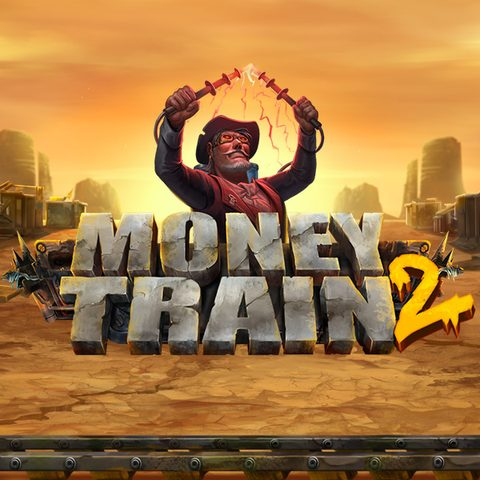

Money Train 2 - RTP, reseña y dónde jugar

| Proveedor | Relax Gaming |
|---|---|
| Tipo de juego | Tragamonedas de video |
| Tema | atraco de tren steampunk del salvaje oeste |
| RTP | 96.40% (98% con compra de bono) |
| Volatilidad | Alta |
| Ganancia máxima | 50,000x |
| Rodillos / Líneas | 5x4, 40 líneas de pago |
| Apuesta mín / máx | €0.10 / €20 |
| Móvil | Sí |
Resumen
Money Train 2 es la secuela que convirtió el concepto de atraco de tren de Relax Gaming en un éxito que definió el género. Lanzado en septiembre de 2020, mantiene el ambiente steampunk del salvaje oeste del original y añade las funciones que pedían los jugadores: un juego base con respins y una ronda de bono Money Cart más profunda.
El juego funciona en una cuadrícula de 5x4 con 40 líneas de pago. Los símbolos bajos son palos de cartas desgastados, mientras que los altos son la banda: Payer, Collector, Sniper y Necromancer. El cráneo comodín sustituye a todos los símbolos regulares.
Consigue 2 símbolos de bono para activar la función Respin, donde cada símbolo revela un multiplicador. Consigue 3 o más símbolos de bono para entrar en la ronda de bono Money Cart: 3 respins con scatters bloqueados, símbolos de personajes especiales con habilidades únicas y la posibilidad de añadir columnas extra cuando se llena un rodillo.
Con un RTP del 96.40% (98% con compra de bono), alta volatilidad y ganancias de hasta 50,000x la apuesta, Money Train 2 sigue siendo una de las tragamonedas de alta volatilidad más jugadas años después de su lanzamiento. Las apuestas van de €0.10 a €20 por giro.
Jugar a Money Train 2 con dinero real
Dónde jugar a Money Train 2
Money Train 2 está disponible en casinos en línea con juegos de Relax Gaming. Empieza con nuestras listas revisadas:
Nigeria | Brazil | Mexico | Kenya | South Africa | Colombia | India
Preguntas frecuentes sobre Money Train 2
¿Cuál es el RTP de Money Train 2?
Money Train 2 has an RTP of 96.40% in base mode, rising to 98% when the Bonus Buy feature is used. Casinos can run different RTP settings, so check the in-game info where you play.
¿Cuál es la ganancia máxima en Money Train 2?
Hasta 50,000x tu apuesta.
¿Qué funciones de bono tiene Money Train 2?
Conseguir 2 símbolos de bono activa la función Respin. Conseguir 3 o más símbolos de bono abre la ronda de bono Money Cart con 3 respins, donde símbolos especiales como Payer, Collector, Sniper y Necromancer aumentan las ganancias.
¿Puedo jugar a Money Train 2 gratis?
Muchos casinos en línea te permiten probar Money Train 2 en modo demo sin depositar. Elige un casino de nuestras listas y busca la opción de demo o juego gratis.
¿Funciona Money Train 2 en móvil?
Sí. Como todos los lanzamientos de Relax Gaming, Money Train 2 funciona en el navegador de teléfonos y tabletas, sin necesidad de descarga.